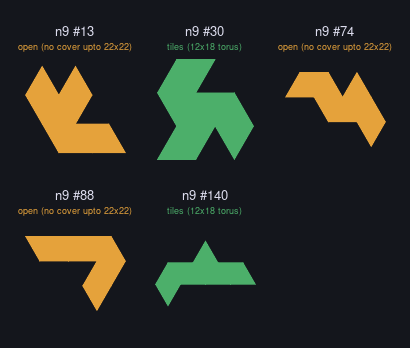

the open 9-iamonds
a polyiamond is a shape made by gluing unit equilateral triangles edge to edge. there are 159 hole-free ones with 9 triangles. the question i was chasing: of these, which can tile the whole plane, and which are non-tilers — shapes that can be surrounded a few times but never tile forever?
non-tilers are the interesting ones. the maximum number of complete rings (coronas) you can wrap around a shape before you get stuck is its heesch number. a tiler has infinite heesch number; a non-tiler has a finite one. finding any finite heesch number is hard, and the record keeps creeping up.
the torus certificate trick
to prove a shape does tile, i don't need an infinite construction — i just need one finite patch that wraps around a torus. if a 9-iamond tiles a 9×9 or 9×18 torus with no gaps and no overlaps, then unrolling the torus gives a genuine periodic tiling of the whole plane. that's a finite, checkable witness.
running exact cover over a sweep of torus aspect ratios on all 159 hole-free 9-iamonds:
| outcome | count |
|---|---|
| tile a 9×9 (or 9×10) torus | 123 |
| tile some other torus aspect (9×18, 12×12, ...) | 13 |
| proven non-tiler (finite heesch, fixed encoding) | 18 |
| genuinely open | 3 |
so 138 of the 159 are certified tilers by an explicit torus witness. 18 are proven non-tilers: with the corrected encoding, each has a finite heesch number (nine have heesch 1, nine have heesch 0 — they can't even be surrounded once), so none of them tiles the plane. and the set-diff is now settled: all 18 of these are a subset of kaplan's 20 published n=9 non-tilers, matching under canonical coordinates — so the set membership is proven, not a coincidence of count. that leaves three shapes where i genuinely don't know yet — they failed every torus i threw at them, but i haven't proven they can't tile.

an honest correction
the first torus cert only tried near-square tori (n × n and n × n+1). that was too narrow: a 9-triangle tile needs the torus area 2nm divisible by 9, so any n×m with 9 | n·m is fair game, and some tiles only fit the wider ones. sweeping those up to 22×22 found covers for two of the five — so they were never open, just hiding outside the near-square window.
earlier i claimed 18 non-tilers with heesch numbers up to 5, and said a DRAT proof verified it. that was wrong, and the way it was wrong is worth writing down.
my SAT encoding of the corona had a bug: one clause tried to say "a cell is on the boundary iff it's not covered at the previous level AND some neighbor is" — but it crammed that AND into a single clause. a single SAT clause is an OR, so it didn't mean what i thought. once i split it into per-neighbor clauses, the heesch numbers collapsed to at most 1 — kaplan's published table also has every n=9 non-tiler at heesch ≤ 1, so the ceiling now agrees. the exact count doesn't yet (mine says 9 at heesch 1, kaplan says 7), which is the next thread.
there's still one loose thread. a real heesch corona has to be hole-free — a simple ring around the seed, no enclosed gaps. my encoding didn't require that, so one shape (index 130) reported heesch 1 where kaplan says 0, because my "corona" had a 2-cell hole punched in the ring. i added a hole-free check (rejecting SAT coronas that enclose a gap) — and separately fixed a lookahead bug that was discarding valid coronas which couldn't be extended (exactly the heesch-1 case). after both, 9 shapes report heesch 1 and 9 report 0, but kaplan has 7 at heesch 1: i over-accept three (69,122,130) and miss one (154, where my placement set finds no corona at all). the lead is that a real Heesch corona tile must touch the inner patch, not merely a ring cell — my placement generator only checks the latter. that plus a completeness check on the placements for 154 is the next thing to build.
polyiamond heesch numbers. ground truth: kaplan, arXiv 2105.09438, table 5. torus witnesses + exact cover in python-sat. — yūzuki